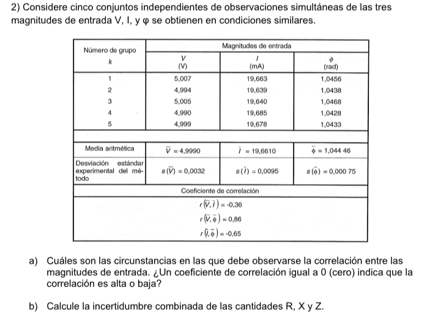

GUIA 1 : Medidas Electronicas 1 Utn FRBA
Ejercicio 1

[20]:
import numpy as np
CANT_MEDICONES = 20
V_MEAN = 100.145
V_STD = 1.489
RANGO = 200
ERROR_LECTURA = 0.5
ERROR_CUENTA = 3
print("Analisis Tipo A")
u_i = V_STD / np.sqrt(CANT_MEDICONES)
print("u_i(V) = %0.2f" %u_i)
print ("Analisis Tipo B")
VOLTS_X_CUENTA = 199.9 / 1999
ERROR_TIPO_B_TOTAL = (ERROR_LECTURA / 100) * V_MEAN + ERROR_CUENTA * VOLTS_X_CUENTA
u_j = ERROR_TIPO_B_TOTAL / np.sqrt(3)
print("u_j(V) = %0.2f" %u_j)
print ("Analisis Incentidumbre Combinada")
u_c = np.sqrt(u_i**2 + u_j**2)
print("u_c(V) = %0.2f" %u_c)
print ("Calculo de Veff (Grados efectivos de libertad)")
V_eff = (u_c**4) / (u_i**4 / (CANT_MEDICONES - 1))
print("V_eff = %.2f" % V_eff)
print ("Suponiendo q es Tipo B dominante!")
print(f"u_i/u_j = %.2f" %(u_i/u_j))
K = 1.9
print ("RESULTADO!")
print("V = %0.2f +- %0.2f @ 95%%; k = %0.2f" %(V_MEAN, u_c * K, K))
Analisis Tipo A
u_i(V) = 0.33
Analisis Tipo B
u_j(V) = 0.46
Analisis Incentidumbre Combinada
u_c(V) = 0.57
Calculo de Veff (Grados efectivos de libertad)
V_eff = 162.88
Suponiendo q es Tipo B dominante!
u_i/u_j = 0.72
RESULTADO!
V = 100.14 +- 1.08 @ 95%; k = 1.90
Ejercicio 2

[21]:
V = np.array([5.007, 4.994, 5.005, 4.990, 4.999])
I = np.array([19.663, 19.639, 19.640, 19.685, 19.678])
PHI = np.array([1.0456, 1.0438, 1.0468, 1.0428, 1.0433])
V_media = V.mean()
I_media = I.mean()
PHI_media = PHI.mean()
u_i_V = V.std(ddof=1) / np.sqrt(V.size)
u_i_I = I.std(ddof=1) / np.sqrt(I.size)
u_i_PHI = PHI.std(ddof=1) / np.sqrt(PHI.size)
print ("u_i_V = %0.4f\nu_i_I = %0.4f\nu_i_phi = %0.4f" %(u_i_V, u_i_I, u_i_PHI))
CORRELACION_MATRIX = np.corrcoef([V,I,PHI])
corr_VI = CORRELACION_MATRIX[0][1]
corr_VPHI = CORRELACION_MATRIX[0][2]
corr_IPHI = CORRELACION_MATRIX[1][2]
print ("RESULTADO! PARA Z")
Z_media = V_media / I_media * np.exp(1j * PHI_media)
dZ_dV = 1 / Z_media
dZ_dI = - V_media / I_media**2
dZ_dPHI = 1j * Z_media * PHI_media * np.exp(1j * PHI_media)
u_c_Z = np.sqrt((dZ_dV * u_i_V)**2 + (dZ_dI * u_i_I)**2 + (dZ_dPHI * u_i_PHI)**2 + 2 * (dZ_dV * dZ_dI * corr_VI * u_i_V * u_i_I + dZ_dV * dZ_dPHI * corr_VPHI * u_i_V * u_i_PHI + dZ_dI * dZ_dPHI * corr_IPHI * u_i_I * u_i_PHI))
K = 2.87 # De tabla T-Student con vi = 4
print ("Z = ({:.4f}) +- ({:.4f}) @ 95%%; k = {:.2f}".format(Z_media, u_c_Z * K, K))
print ("RESULTADO! PARA R")
R_media = np.abs(Z_media) * np.cos(PHI_media)
dR_dV = np.cos(PHI_media) / I_media
dR_dPHI = - np.abs(Z_media) * np.sin(PHI_media)
dR_dI = - V_media / I_media**2 * np.cos(PHI_media)
u_c_R = np.sqrt((dR_dV * u_i_V)**2 + (dR_dI * u_i_I)**2 + (dR_dPHI * u_i_PHI)**2 + 2 * (dR_dV * dR_dI * corr_VI * u_i_V * u_i_I + dR_dV * dR_dPHI * corr_VPHI * u_i_V * u_i_PHI + dR_dI * dR_dPHI * corr_IPHI * u_i_PHI * u_i_I))
print ("R = ({:.4f}) +- ({:.4f}) @ 95%%; k = {:.2f}".format(R_media, u_c_R * K, K))
u_i_V = 0.0032
u_i_I = 0.0095
u_i_phi = 0.0008
RESULTADO! PARA Z
Z = (0.1277+0.2198j) +- (0.0179-0.0316j) @ 95%%; k = 2.87
RESULTADO! PARA R
R = (0.1277) +- (0.0002) @ 95%%; k = 2.87
Ejercicio 3

[5]:
I = np.array([10.01, 10, 10.02, 10.01, 10])
I_media = I.mean()
u_i = I.std(ddof=1) / np.sqrt(I.size)
ERROR_LECTURA = 0.05
ERROR_I = 2
ERROR_TIPO_B_TOTAL = (ERROR_LECTURA / 100) * I_media + ERROR_I
u_j = ERROR_TIPO_B_TOTAL / 2.576 # el valor cte sale del 99% de la tabla
u_c = np.sqrt(u_i**2 + u_j**2)
V_eff = (u_c**4) / (u_i**4 / (len(I) - 1))
print (f"u_i = {u_i:.4f} u_j = {u_j:.4f}")
print (f"V_eff = {V_eff:.4f}")
print ("Dado q V_eff >> 30 => TIPO B dominante")
K = 1.655
print (f"ui/uj = {(u_i/u_j)} => de la tabla K = {K}")
print ("I = {:.4f} +- {:.4f} @ 95%%; k = {:.2f}".format(I_media, u_c * K, K))
u_i = 0.0037 u_j = 0.7783
V_eff = 7490339992.1450
Dado q V_eff >> 30 => TIPO B dominante
ui/uj = 0.004807227032130344 => de la tabla K = 1.655
I = 10.0080 +- 1.2882 @ 95%%; k = 1.66
Ejercicio 4

[45]:
# I Distribucion normal y confianza 95%
I_MEAN = 10
ERROR_I = .1
V_MEAN = 123.38
V_STD = .05
ERROR_DIGITOS = 1
ERROR_LECTURE = .04
print ("Hallare R:")
# R = V/I
R_MEAN = V_MEAN / I_MEAN
u_i_V = V_STD
u_j_V = (ERROR_LECTURA * V_MEAN / 100) + (399.99 * ERROR_DIGITOS / 39999)
u_c_V = np.sqrt(u_i_V**2 + u_j_V**2)
u_c_I = ERROR_I * I_MEAN / 2 # debido a q es una normal
dR_dV = 1 / I_MEAN
dR_dI = - V_MEAN / I_MEAN**2
u_c_R = np.sqrt((dR_dV * u_c_V)**2 + (dR_dI * u_c_I)**2)
K = 2
print ("R = {:.4f} +- {:.4f} @ 95%%; k = {:.2f}".format(R_MEAN, u_c_R * K, K))
print ("Potencia disipada:")
P_MEAN = I_MEAN**2 * R_MEAN
dP_dI = 2 * I_MEAN * R_MEAN
dP_dR = I_MEAN**2
u_c_P = np.sqrt((dP_dI * u_c_I)**2 + (dP_dR * u_c_R)**2)
print ("P = {:.4f} +- {:.4f} @ 95%%; k = {:.2f}".format(P_MEAN, u_c_P * K, K))
print ("Hallare I:")
# I = V/R
V_MEAN = .34642
V_STD = .05
I_MEAN = V_MEAN / R_MEAN
u_i_V = V_STD
u_j_V = (ERROR_LECTURA * V_MEAN / 100) + (.39999 * ERROR_DIGITOS / 39999) + V_MEAN / u_c_R
u_c_V = np.sqrt(u_i_V**2 + u_j_V**2)
P_MEAN = I_MEAN**2 * R_MEAN
dI_dV = 1 / R_MEAN
dI_dR = - V_MEAN / R_MEAN**2
u_c_I = np.sqrt((dI_dV * u_c_V)**2 + (dI_dR * u_c_R)**2)
print ("I = {:.4f} +- {:.4f} @ 95%%; k = {:.2f}".format(I_MEAN, u_c_I * K, K))
print ("Potencia disipada:")
u_c_P = np.sqrt((dP_dI * u_c_I)**2 + (dP_dR * u_c_R)**2)
print ("P = {:.4f} +- {:.4f} @ 95%%; k = {:.2f}".format(P_MEAN, u_c_P * K, K))
Hallare R:
R = 12.3380 +- 1.2402 @ 95%%; k = 2.00
Potencia disipada:
P = 1233.8000 +- 276.1726 @ 95%%; k = 2.00
Hallare I:
I = 0.0281 +- 0.0912 @ 95%%; k = 2.00
Potencia disipada:
P = 0.0097 +- 126.0467 @ 95%%; k = 2.00